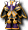
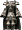
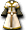

斯皮羅
斯皮羅
我們伺服器實際的怪物設定（不是日版 wiki 的資料）。
能力值
| 項目 | 本伺服器 | 日版 wiki |
| 等級 | 8 | 50 |
| HP | 144～168 | 3,360 |
| AC | 97 | 10 |
| MC | 90 | 0 |
| AAR | 3 | 20 |
| SAR | 20 | -10 |
| STR | 5 | 7 |
| DEX | 5 | 25 |
| INT | 1 | 25 |
| WIS | 1 | 25 |
| CON | 5 | 25 |
| 經驗值 | 264 | 1000 |
| 名聲值 | 0 | 10 |
| 金錢 | 70 | 300 |
| 攻擊屬性 | 無 | 風 |
| 防禦屬性 | 無 | 無 |
出現地圖
| 地圖 | 數量 | 出現位置 |
| 魔界村森林2 | 42 | 整張地圖 |
掉落物品
| 道具 | 基本機率 |
 生命之水 生命之水 | 6% |
 水果 水果 | 6% |
| a | 5% |
 金粉 金粉 | 1% |
 [50]斯皮羅變身捲軸 [50]斯皮羅變身捲軸 | 0.5% |
 [99]陸式魔法卡組材料C [99]陸式魔法卡組材料C | 0.1% |
| [13]柒式魔法卡組材料D | 0.1% |
| [12]參式劍卡材料C | 0.1% |
 一般外觀附魔 一般外觀附魔 | 0.1% |
| 雙重AAR附魔 | 0.1% |
 坎布羅短袍 坎布羅短袍 | 0.05% |
 坎布琳短衫 坎布琳短衫 | 0.05% |
| 修恩鞋罩製造法 | 0.3% |
| 堅固手套製造法 | 0.3% |
| 重型堅固手套製造法 | 0.3% |
| 強力CHeal附魔 | 0.1% |
 泰特拉鎖子甲AG 泰特拉鎖子甲AG | 0.05% |
 泰特拉戰士胸甲UG 泰特拉戰士胸甲UG | 0.05% |
| 泰特拉劍士鍊甲UG | 0.05% |
 泰特拉先行服AG 泰特拉先行服AG | 0.05% |
 泰特拉佩特格拉榭 | 0.05% |
 泰特拉蓋姆布爾羅短袍UG 泰特拉蓋姆布爾羅短袍UG | 0.05% |
| 泰特拉女鎖子甲UG | 0.05% |
 泰特拉主謀女衫AG 泰特拉主謀女衫AG | 0.05% |
 泰特拉女巫師袍 泰特拉女巫師袍 | 0.05% |
| 泰特拉女巫師袍AG | 0.05% |
| 泰特拉女巫師袍UG | 0.05% |
 泰特拉女監督之袍 泰特拉女監督之袍 | 0.05% |
 泰特拉光之女賢者服 泰特拉光之女賢者服 | 0.05% |
 泰特拉女拳法裝 泰特拉女拳法裝 | 0.05% |
 泰特拉月之騎士女鎧UG | 0.05% |
 泰特拉克斯金吉爾瓦爾UG 泰特拉克斯金吉爾瓦爾UG | 0.05% |
 [第2期]神秘的寵物蛋 [第2期]神秘的寵物蛋 | 0.05% |
| 四層風之皮帶 | 0.05% |
| 逃脫綁腿製造法 | 0.3% |
| HP增幅器 5 階段製造法 | 0.3% |
| WIS增幅器 5 階段製造法 | 0.3% |
| CON／INT增幅器 1 階段製造法 | 0.3% |
| WIS極大器 1 階段製造法 | 0.3% |
 強力爆擊附魔 強力爆擊附魔 | 0.1% |
| 超級DEX附魔 | 0.1% |
 艾德爾捲軸 艾德爾捲軸 | 0.1% |
 強力外觀附魔HMW 強力外觀附魔HMW | 0.1% |
 騎士鎧甲 2 階段製造法（男） 騎士鎧甲 2 階段製造法（男） | 0.3% |
| 逃脫護脛帶製造法 | 0.3% |
 墮落天使之寶珠製造法 墮落天使之寶珠製造法 | 0.3% |
| WIS增幅器 1 階段製造法 | 0.3% |
| MDAM增幅器 4 階段製造法 | 0.3% |
| MHIT增幅器 4 階段製造法 | 0.3% |
| 武道家鎧甲 1 階段製造法（女） | 0.3% |
| 堅固泰倫製造法 | 0.3% |
| 武道家鎧甲 3 階段製造法（男） | 0.3% |
| CON增幅器 5 階段製造法 | 0.3% |
| MAC減幅器 5 階段製造法 | 0.3% |
| [74]米魯里斯警備兵變身捲軸 | 0.1% |
 [神秘結晶]兌換券 [神秘結晶]兌換券 | 0.1% |
 經驗修道院長之袍 | 0.05% |
 經驗咒文之裙 經驗咒文之裙 | 0.05% |
 經驗匕首 經驗匕首 | 0.05% |
 經驗短刃劍 經驗短刃劍 | 0.05% |
 回溯計數器加強版[飾品] 回溯計數器加強版[飾品] | 0.1% |
| 神聖回溯計數器[飾品] | 0.1% |
| 回溯計數器加強版 [防具] | 0.1% |
| 反射綁腿製造法 | 0.3% |
 高級睡眠恢復捲軸 高級睡眠恢復捲軸 | 0.1% |
| 毒恢復捲軸 | 0.1% |
| [Lv4泰特拉鎧甲]升級券 | 0.1% |
| [3次]短劍2階段升級捲軸 | 0.1% |
| 青銅劍製造法 | 0.3% |
| SAR增幅器 3 階段製造法 | 0.3% |
| STR／CON增幅器 1 階段製造法 | 0.3% |
| 重型堅固長靴製造法 | 0.3% |
 重擊 重擊 | 0.1% |
基本機率再乘上伺服器的掉寶倍率；「隨機一件」是從一組道具裡抽一件。